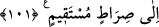

NASIL İNKÂR EDERSİNİZ?
98. De ki: Ey ehl-i kitap! Allah yaptıklarınızı görüp dururken niçin Allah’ın
âyetlerini inkâr edersiniz?
99. De ki: Ey ehl-i kitap! (Gerçeği) görüp bildiğiniz halde niçin Allah’ın yolunu
eğri göstermeye yeltenerek mü’minleri Allah yolundan çevirmeye kalkışıyorsunuz?
Allah yaptıklarınızdan habersiz değildir.
100. Ey îman edenler! Kendilerine kitap verilenlerden bir guruba uyarsanız
îmanınızdan sonra sizi yeniden inkârcılığa sevkederler.
101. Size Allah’ın âyetleri okunurken, üstelik Allah Rasûlü de aranızda iken nasıl
inkâra saparsınız? Her kim Allah’a bağlanırsa kesinlikle doğru yola iletilmiştir.
“De ki: “Ey kitap ehli” Bunlar, yahûdî ve hıristiyanlardır. Böyle adlandırılmışlardır.
Çünkü kitap, illâ da münzel olacak diye bir şey yoktur. İşte yahûdî ve hıristiyanlar da
ister Ruhu’l-Emîn’in getirdiği olsun, ister kendi uydurdukları olsun, yazdıkları bu kitâba
nisbetle ehl-i kitâb diye adlandırılmaktadır.
“Neden Allah’ın âyetlerini inkâr ediyorsunuz?” Bu soru, Allah’ın âyetlerini inkâr
etmeyi gerektirecek bir sebep olmadığını belirtmekte ve bu davranışları kınamaktadır.
Kendisinden ictinâb etmeyi gerektiren şeylerin tamamını ortaya koymaktadır.
Buradaki Allah’ın âyetleri tabirinden maksat, hac konusunda okunan ve daha başka
âyetlerin de içinde bulunduğu Kur’ân âyetlerine şâmil olduğu gibi, Hz Peygamber’in
gerçek bir peygamber olduğunu gösteren Tevrat ve İncil âyetlerini de şâmildir.
“Oysa Allah yaptıklarınızı görüp durmaktadır.” Allah Teâlâ, bütün amellerinize en
ince noktasına kadar muttalî olduğu ve bu amellere kılı kırk yararcasına tam bir karşılık
vereceği halde, hangi sebepten dolayı O’nun âyetlerini inkâr ediyorsunuz?
Böyle bir anlatım tarzı, şüphesiz, gösterecekleri tüm mazeretlerin önünü tıkayacak,
öne sürecekleri hiçbir sebebi kabul etmeyecektir.